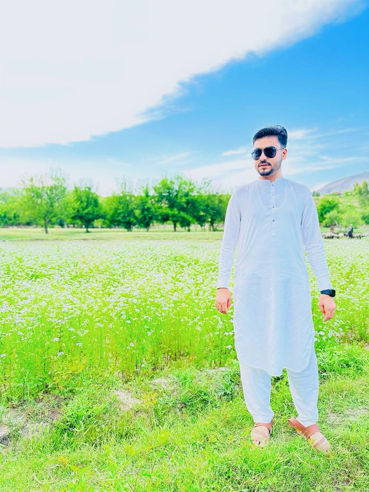
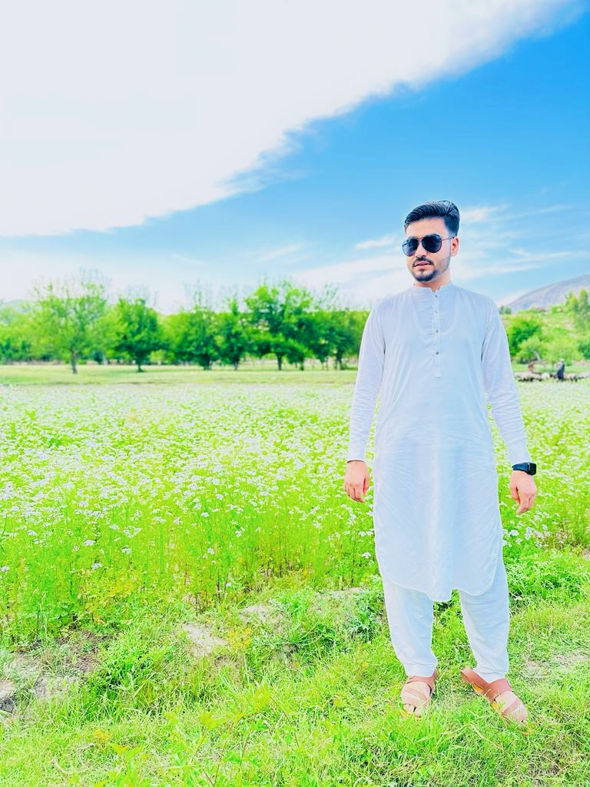

Traveling is a deeply enriching and transformative experience that allows individuals to explore new destinations, cultures, and perspectives. It is a way to break free from the confines of one's daily routine and immerse oneself in the wonders of the world. As a traveler, you become a storyteller, an adventurer, and a learner. Let's explore in detail what it means to be a traveler:
Wanderlust and Curiosity: Travelers are driven by a deep sense of wanderlust and curiosity. They have an insatiable desire to explore new places, whether it's a remote village in the mountains, a bustling metropolis, or an ancient archaeological site. This curiosity fuels their journeys, propelling them to venture into the unknown.
Embracing the Unknown: Travelers are not afraid of the unknown; in fact, they embrace it. They find joy in the unpredictability of travel, knowing that every turn may bring a new adventure or discovery. They are open to meeting strangers, trying unfamiliar foods, and navigating foreign languages and customs.
Cultural Immersion: Travelers seek to immerse themselves in the culture of the places they visit. They want to understand the local way of life, traditions, and history. This often means interacting with locals, participating in cultural activities, and trying to learn the language.
Appreciation of Diversity: Travelers appreciate and respect the diversity of the world. They revel in the differences between cultures and see them as opportunities for personal growth. This appreciation for diversity extends to an openness to different worldviews, beliefs, and lifestyles.
Learning and Growth: Every journey is a learning experience for a traveler. They expand their knowledge about history, geography, and the human condition. They also learn about themselves, gaining insights into their strengths and weaknesses. Travel often fosters personal growth and self-discovery.
Responsible Travel: Many modern travelers are conscious of the impact they have on the places they visit. They prioritize sustainable and responsible travel, aiming to minimize their carbon footprint, support local economies, and protect the environment.
Memories and Stories: Travelers collect memories and stories along their journeys. They document their adventures through photos, journals, or blogs. These stories become a part of their identity and are often shared with friends and family, inspiring others to explore the world.
Adaptability: Travelers are adaptable and resourceful. They can navigate unfamiliar terrain, deal with unexpected challenges, and find solutions in various situations. This adaptability is a valuable skill honed through travel experiences.
Adventure and Thrill: Travelers often seek adventure and thrill in their journeys. This might involve hiking in rugged landscapes, engaging in water sports, or exploring off-the-beaten-path destinations. Adventure travel adds excitement and adrenaline to their experiences.
Appreciation for Home: Traveling often leads to a deeper appreciation for one's home and a sense of gratitude for the familiar. It allows travelers to see their own culture and surroundings from a new perspective.
Introduction to travel blog
1. An Adventure in the Amazon Rainforest:
Sarah, an avid explorer, embarked on a solo journey to the Amazon rainforest. She hiked through dense jungles, navigated rivers, and encountered vibrant wildlife. One day, while camping near a remote village, she befriended a local guide, Carlos. Together, they explored hidden waterfalls, discovered rare species of birds, and shared stories by the campfire. Their adventure in the Amazon became a life-changing experience, forging an enduring bond betw strangers and transformed their Tokyo trip into an unforgettable adventure.
2. Lost and Found in Tokyo:
Mark and Emily, a young couple, traveled to Tokyo to experience its vibrant culture and bustling city life. One evening, they got lost in the labyrinth of streets and couldn't communicate with anyone due to the language barrier. Struggling to find their way back to the hotel, they stumbled upon a cozy, family-owned ramen shop. The owner, Hiroshi, not only fed them but also drew a detailed map to their hotel. This unexpected encounter made them realize the kindness of strangers and transformed their Tokyo trip into an unforgettable adventure.
3. A Road Trip Through the American Southwest:
Mike and Julia decided to take a road trip through the American Southwest. Starting in Las Vegas, they visited the Grand Canyon, hiked in Zion National Park, and marveled at the beauty of Monument Valley. Along the way, they met fellow travelers, shared stories around campfires, and even experienced a breathtaking meteor shower in the desert. This journey opened their eyes to the diverse landscapes of the United States and reinforced their love for adventure.
4. From Paris with Love:
Emma, a hopeless romantic, had always dreamed of visiting Paris, the "City of Love." On a solo trip, she wandered the charming streets, sipped coffee in quaint cafes, and admired the Eiffel Tower. One day, while sketching at Montmartre, she met Pierre, a local artist. They spent days exploring the city together, creating art, and, ultimately, falling in love. What started as a solo adventure in Paris turned into a beautiful love story, proving that sometimes, the best journeys are the ones of the heart.
 
